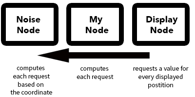

Writing a new custom node is very simple. This page contains the topics:
At first you need to create a new C# script and save it to the nodes directory of GDI. Let's name the new class MyNode in this example. This node should get a number from its input socket, make a calculation and return it to the output socket. MyNode has to inherit from the existing class AbstractNumberNode to get the functionality of a node that can return numbers. We need to override the abstract methods of the AbstractNumberNode as well. Our node class now looks like this:
using System;
using Assets.Code.GDI.Socket;
public class MyNode : AbstractNumberNode
{
// constructor
public MyNode(int id, Graph parent) : base(id, parent)
{
}
// draw method for the nodes GUI
protected override void OnGUI()
{
}
// update method for the nodes GUI
public override void Update()
{
}
// calculation method
public override float GetNumber(OutputSocket outSocket, Request request)
{
return 0;
}
}The constructor gets called if our node is created. Usually you add sockets here and initialize the size of the node. The id parameter is the unique id of the node. The parent parameter is the graph of the node. Both parameters are passed to the parent class and we do not need to touch them.
Do not use Unity specific objects in the constructor (like Vector3 or Rect) because it is called within the serialization process. Unity would otherwise throw error messages.
The OnGUI method gets called from the EditorWindow of GDI. You can draw the GUI elements of the node and use the functionality of the EditorGUI API of Unity.
The positioning of UI elements is relative to the node. You also get mouse position events relative to it.
The Update method gets called if a connected input node has changed. If our node displays something that is based on its input we would need to update it here.
The Number Display Node for example updates its number on every update call.
The Get Number method is called from a node that is connected to an output socket of MyNode. We will implement the calculation logic of the node here and return it. For the moment let's ignore its parameters. We get to that later.
Read more about the threading rules for that method later on this page.
In order to get number values from a connected input node we need to create an input socket for it. We also want to return our calculated number to an output node so we create an output socket as well.
Let's add the sockets in the constructor of MyNode, get the input number, add a value to it and return it. Our node class now looks like this:
using System;
using Assets.Code.GDI.Socket;
public class MyNode : AbstractNumberNode
{
private InputSocket _inputSocket;
public MyNode(int id, Graph parent) : base(id, parent)
{
_inputSocket = new InputSocket(this, typeof(INumberConnection));
OutputSocket outputSocket = new OutputSocket(this, typeof(INumberConnection));
Sockets.Add(_inputSocket);
Sockets.Add(outputSocket);
Width = 100;
Height = 100;
}
protected override void OnGUI()
{
}
public override void Update()
{
}
public override float GetNumber(OutputSocket outSocket, Request request)
{
float inputNumber = GetInputNumber(_inputSocket, request);
return inputNumber + 1;
}
}In the constructor we create our input and output sockets. The sockets need to have an reference to our node. That's why we assign this as the first parameter. The second parameter defines the type of the socket. Our node should receive and return numbers so we assign the type of INumberConnection as the socket types. We also add our sockets to the list of of sockets.
In the GetNumber method we receive the number of our input using the helper method GetInputNumber. We just need to assign our input socket and pass through the request parameter Finally we add a number to the input value and return it.
In our simple case we can ignore the OutputSocket parameter because MyNode only contains one output. If we have got multiple outputs that return a number we would need to check which of the outputs was requested.
Nodes are detected by GDI using the C# reflection api. This makes it very easy to register them to the Editor. We just need to add an annotation to the class where we specify the menu entry.
GDI uses json serialization to save a graph to a file. The Serializable annotation ensures that our node can be made persistent.
using System;
using Assets.Code.GDI.Socket;
namespace Assets.Code.GDI.Nodes.Number
{
[Serializable]
[GraphContextMenuItem("Number", "My Node")]
public class MyNode : AbstractNumberNode
{
// .. implementation
}
}
The first parameter of GraphContextMenuItem defines the menu entry path of MyNode. This can also be an empty string to add our node in the root menu. The second parameter tells the name of the node.
It is also recommended to put the class in a namespace. The serialization mechanism uses this namespace to instantiate the node object.
At this point we should be able to add our node to a graph using GDI. Simply open up the Editor window, right click on the canvas, select the entry Numbers and select the node My Node
In our example we just bypassed the request parameter of the GetNumber method. We needed to pass it to the InputSocket because we do not if the connected node uses it.
The Request contains information about the value that we want to get. For instance it contains coordinate values for x, y and z. This enables you to create nodes that return numbers based on a three dimensional position. If you write another noise algorithm you can use this coordinates to compute the noise.
Another example for the usage of the request parameter is the Color Gradient Node. It is capable of returning color values in one dimension of the gradient. This value is often called t but in our case it uses the y coordinate of the request parameter. In Unity the y coordinate is the vertical dimension so it is very comfortable to tint height maps with this node.
Request parameters can be used in many ways in your custom node. You can even extend the set of values in the Request struct. Keep in mind that your node should be compatible to the way other nodes handle the requests. The node documentation tells you more about the usage for every node class.
All node classes need to have the [Serializable] annotation as seen in the example above.
If your node contains an option like a checkbox or something you want to make persistent you need mark the corresponding class members as [SerializableField]. Notice that you should not serialize UI elements but its states (like a boolean field for a checkbox).
Public class members are getting serialized as well. If you do not want that you need to mark it as [NonSerialized]. Find more information about the serialization in Unity at the Unity Manual.
[SerializeField] private bool _optionChecked;
[NonSerialized] public int AnInteger;
The GetNumber method of our node can be called from different threads simultaneously. Make sure that you do not write to class members in this method. Of cause it is allowed to request InputSocket values or read other states of the node (like a boolean field that is set by a checkbox).
It can be very tempting to write data to the node in this request methods because it may lead to better performance or something. But this does not work for multi threaded node requests like GDI offers.
For now we have only discussed a node type that can return numbers like those that inherit from AbstractNumberNode. You can also inherit from other classes to return e.g. colors using AbstractColorNode or a list of Vector3 using AbstractVector3Node.
The only difference of the abstract node classes is their request method. For instance a AbstractColorNode must override the method:
public abstract UnityEngine.Color GetColor(OutputSocket socket, Request request);Request methods have to follow the rules to be thread safe as described before.
In order to return color values we usually want to add an OutputSocket of the type IColorConnection.
Sockets.Add(new OutputSocket(this, typeof(IColorConnection)));We can also create nodes that return more than one type of value. If you like to create a node that returns a number, a color and a list of vectors your class needs to implement the interfaces that are defining the signature of the request methods.
By inheriting from those interfaces we have made a contract with GDI that we are capable of returning such values.public class MyNode : AbstractNumberNode, IColorSampler, IVectorSampler
{
// contract to act as a number sampler
// (from AbstractNumberNode that inherits INumberConnection)
public override float GetNumber(OutputSocket outSocket, Request request)
{ // implementation..
}
// contract to act as a color sampler
// (from IColorSampler)
public UnityEngine.Color GetColor(OutputSocket socket, Request request)
{ // implementation..
}
// contract to act as a vector list sampler
// (from IVectorSampler)
public List<UnityEngine.Vector3> GetVector3List(OutputSocket outSocket, Request request)
{ //implementation..
}
// ...
}